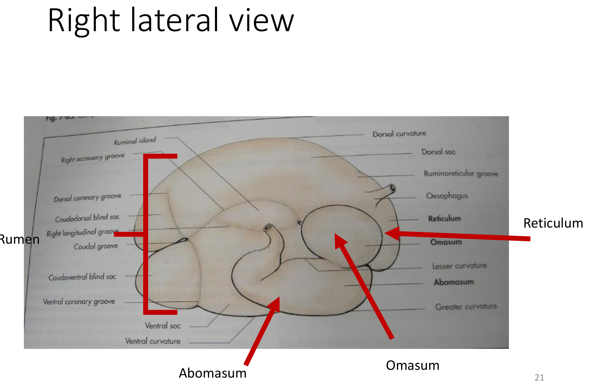
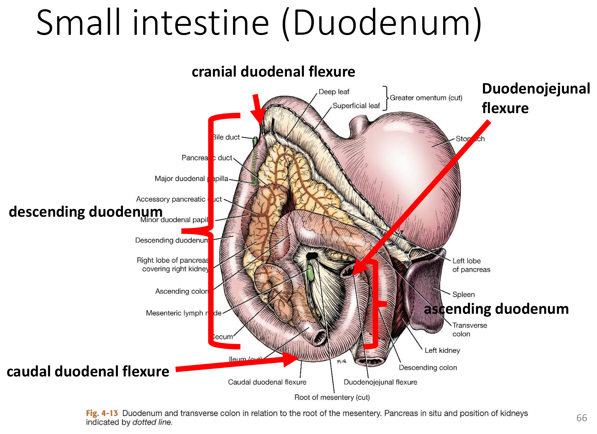
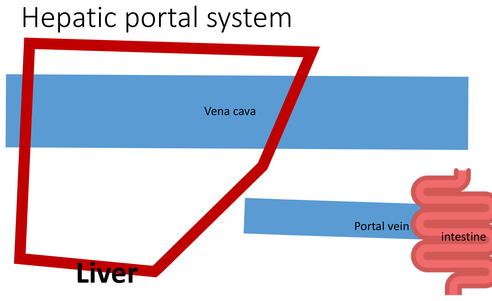
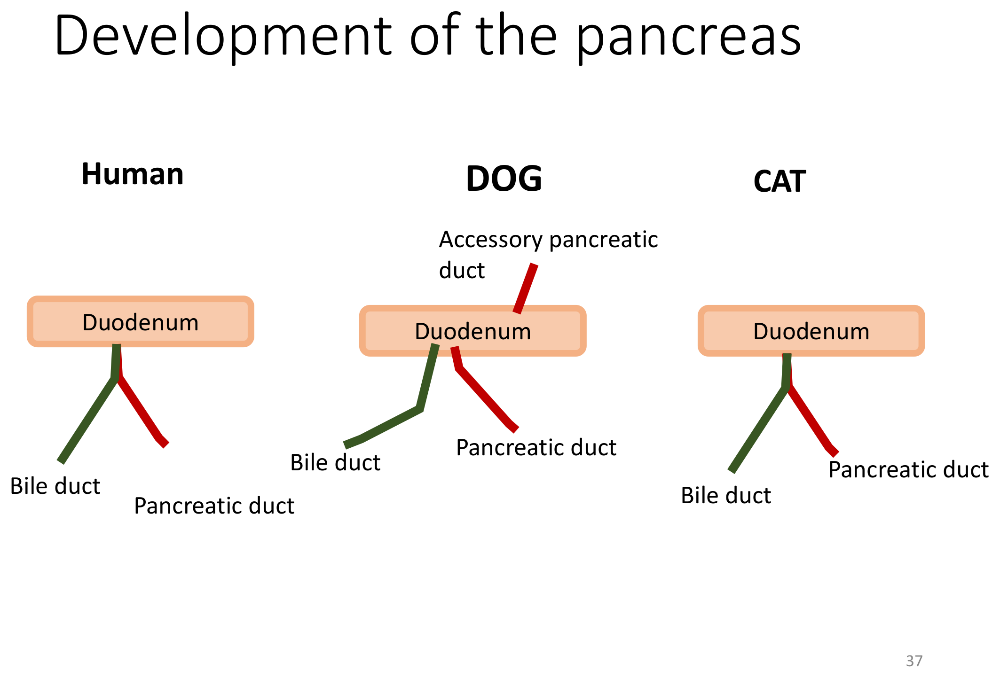

重點摘要
- 消化道從食道到肛門共用同一套四層組織構造（黏膜、黏膜下層、肌層、漿膜），理解這套通用模板後，各段消化道的組織學差異多半只是某一層的局部特化（如胃的皺褶、小腸的絨毛），可大幅減少死背負擔。
- 攝食方式因物種而異，是理學檢查與行為觀察的基礎：牛靠舌頭捲食、馬靠嘴唇、綿羊山羊兼用舌與唇、犬靠牙齒、雞靠喙——攝食方式異常（如舌頭活動度下降）常是神經或口腔疾病的早期線索。
- 反芻動物的「四個胃」其實只有一個真胃：瘤胃、蜂巢胃、重瓣胃是由食道特化而來的「前胃」，只有皺胃是真正的腺體胃（構造與單胃動物相同）。瘤胃臌脹（bloat）與創傷性網胃炎（hardware disease，金屬異物刺穿蜂巢胃波及心包）是牛最經典的兩個前胃臨床病例，務必連著解剖位置一起記憶。
- 網胃溝（reticular groove）的吸吮反射是哺乳反芻動物的特殊路徑：吸吮動作與奶汁中的蛋白質會刺激網胃溝閉合捲成管狀，使奶汁繞過瘤胃直接進入皺胃消化；人工哺乳時奶桶角度或哺乳方式不當可能使此反射失效，奶汁滯留瘤胃發酵，是犢牛／羔羊人工哺乳的常見照護重點。
- 犬貓十二指腸乳突開口有物種差異：犬有主胰管＋副胰管兩個獨立開口；貓通常膽管與主胰管在進入十二指腸前先匯合成同一開口——這解釋了為什麼貓的膽道感染容易「逆行」波及胰臟，肝膽疾病與胰臟炎在貓身上常合併發生。
- 犬貓肝臟有 6 葉（人類僅 4 葉），腸道靜脈血須先經肝門靜脈系統流經肝臟解毒過濾，才匯入後腔靜脈；先天性肝門全身性分流（PSS）依分流位置分肝內型（好發大型犬，如德國牧羊犬、黃金獵犬）與肝外型（好發玩具犬，如約克夏、馬爾濟斯），是常考的品種對應題。
- 大腸（結腸）盤繞模式的物種差異是比較解剖學經典考點：肉食動物結腸簡單呈上升、橫、降三段；反芻動物呈螺旋盤繞於單一平面；豬呈圓錐狀盤繞；馬則盲腸巨大並有背、腹兩層大結腸——馬的巨大盲腸與結腸盤繞正是馬疝痛（colic）好發腸阻塞、腸扭轉位置的解剖基礎。
- 腹膜的大網膜、小網膜與網膜孔（epiploic foramen）是腹腔手術的重要解剖地標：網膜孔是連結大腹腔與網膜囊的唯一通道，也是先天性肝外門脈分流手術定位分流血管的關鍵標記；理解腹膜韌帶（如鐮狀韌帶內含臍靜脈遺跡）有助於掌握肝臟固定與腹腔臟器沾黏的解剖邏輯。
消化道基本構造與攝食方式 Basic Structure & Prehension
消化系統包含從口腔到肛門的消化道（Digestive tract ＝ Gastrointestinal tract ＝ Alimentary canal ＝ Gut），以及唾液腺、肝臟、膽囊、胰臟等附屬消化器官。
消化道的五大功能
抓取食物
機械性磨碎
化學性分解
養分進入體循環
未消化殘渣排出
攝食方式的物種差異
| 物種 | 主要攝食構造 |
|---|---|
| 牛 | 舌頭（捲食） |
| 馬 | 嘴唇 |
| 綿羊、山羊 | 舌頭與嘴唇並用 |
| 犬 | 牙齒 |
| 雞 | 喙 |
消化道組織學通用四層構造重要
| 層次 | 組成 |
|---|---|
| 黏膜 Mucosa | 上皮（Epithelium）＋疏鬆結締組織（支持、連接或分隔體內不同組織與器官） |
| 黏膜下層 Submucosa | 腺體＋緻密結締組織 |
| 肌層 Muscular layer | 平滑肌，負責蠕動 |
| 漿膜 Serosa | 腹腔內稱腹膜（Peritoneum）；胸腔內稱胸膜（Pleura） |
腸繫膜（Mesentery）是連結性腹膜的一種，由結締組織薄片構成，將腸道懸吊固定於腹腔背側壁，同時是腸道血管、神經、淋巴管進出的通道；詳見本頁「腹膜與腸繫膜」章節。
口腔 Mouth (Oral Cavity)
口腔（Mouth ＝ Oral cavity ＝ Buccal cavity）包含嘴唇、舌、牙齒、唾液腺、硬顎、軟顎與口咽，是消化道的入口，也是許多臨床常見疾病（牙科、唾液腺疾病）的好發部位。
口腔前庭與口腔本體
位於牙齒牙齦外側、嘴唇與臉頰內側之間的小空間；腮腺與顴腺的導管開口於此。
背側為硬顎與軟顎，兩側為齒列，腹側為舌頭與鄰近黏膜。
舌 Tongue
經舌繫帶（Lingual frenulum）固定於口腔底部；舌背具多種舌乳頭（Papillae）：絲狀（Filiform）、錐狀（Conical）、蕈狀（Fungiform）、葉狀（Foliate）、輪廓狀（Vallate）；舌下另有舌下肉阜（Sublingual caruncle），是下頜腺與舌下腺導管的共同開口處。
犬貓舌頭內有一條稱為 Lyssa（字源與「狂犬」有關，同源詞即狂犬病毒屬 Lyssavirus）的緻密結締組織構造：犬呈 J 形彎曲，貓則呈較小的螺旋狀，是舌頭手術（如舌部腫瘤切除）需辨識的解剖構造，與狂犬病本身並無實際病理關聯，純粹是命名字源上的趣味連結。
牙齒 Teeth
| 牙齒類型 | 縮寫 |
|---|---|
| 切齒 Incisors | I |
| 犬齒 Canine teeth | C |
| 前臼齒 Premolars | P |
| 臼齒 Molars | M |
犬的齒式（dental formula）：上頷 I-C-P-M＝3-1-4-2；下頷 I-C-P-M＝3-1-4-3。乳牙稱 Deciduous teeth（字源 decid＝to fall，會脫落之意）。反芻動物上頷沒有切齒，改以厚實的齒板（Dental plate）對咬下切齒與唇部咬斷牧草。
牙齒構造
人體最硬組織
—
固定牙齒的硬結締組織
含血管神經
牙齦 Gingiva（Gum）：環繞牙齒的上皮組織。
齒科預防保健（Dental prophylaxis）是犬貓日常口腔照護的核心；馬則須留意浮動齒／尖銳齒緣（Floating teeth）——馬齒為持續萌發齒，咀嚼時頰側（buccal edge）與舌側（lingual edge）磨耗不均會形成尖銳邊緣，刺傷頰黏膜或舌頭，需定期銼磨處理。
唾液腺 Salivary Glands
犬貓有四對主要唾液腺：
| 唾液腺 | 位置 | 導管開口 |
|---|---|---|
| 腮腺 Parotid | 三角形，位於耳道水平段腹側 | 頰黏膜，約第四前臼齒水平 |
| 下頜腺 Mandibular | 纖維囊包覆，位於腮腺尾腹側 | 舌下肉阜，鄰近舌繫帶頭側緣 |
| 舌下腺 Sublingual | 分單管部（Monostomatic）與多管部（Polystomatic） | 與下頜腺導管共同開口於舌下肉阜附近 |
| 顴腺 Zygomatic | 眼眶底部、顴弓內側 | 頰黏膜皺褶，鄰近最後一顆上頷臼齒 |
唾液滲漏積聚形成的軟性、多半無痛（急性腫脹期除外）腫塊，依位置分：舌下黏液囊腫（Ranula，位於舌下腺與下頜腺導管開口尾側）、咽部黏液囊腫（下頜／舌下腺導管破裂所致）、顴腺黏液囊腫（眼球腹側）。人類的腮腺炎（Mumps）則是副黏液病毒感染唾液腺（主要為腮腺）所致，動物較少見。
硬顎 Hard Palate
表面有顎皺褶（Palatal rugae）與切齒乳頭（Incisive papilla）；切齒乳頭深面有顎裂（Palatine fissure）與切齒管（Incisive duct），通往犁鼻器（Vomeronasal organ）——負責偵測費洛蒙，是貓犬出現裂唇嗅反應（Flehmen response）時張口吸氣的功能基礎。
軟顎與口咽 Soft Palate & Oropharynx
軟顎兩側形成顎舌弓（Palatoglossal arch）與顎咽弓（Palatopharyngeal arch），顎扁桃體（Palatine tonsil）位於顎舌弓外側壁；犬沒有懸壅垂（Uvula）這項構造（人類才有）。口咽（Oropharynx）範圍自顎舌弓水平延伸至軟顎尾緣與會厭基部。
食道 Esophagus
食道是連接咽部與胃的肌肉性管道，本身不具消化或吸收功能，純粹作為食團運輸通道，經賁門（Cardia）進入胃。
馬與兔無法嘔吐——與食道下括約肌構造、賁門角度及嘔吐反射整合方式的物種差異有關，是馬腸胃道急症（如胃擴張）臨床處置時必須牢記的限制。
臨床重點：巨食道症與持續性右主動脈弓
食道瀰漫性擴張、蠕動無力，可為先天性或後天性（如重症肌無力、Addison's disease 等全身性疾病續發），臨床表現為進食後反流（regurgitation）與吸入性肺炎風險。
胚胎發育時本應退化的右側第四主動脈弓持續存在並取代左側主動脈弓，環繞食道與氣管形成血管環，壓迫食道造成局部擴張（血管環近端）＋反流，是先天性巨食道症的重要鑑別診斷，好發於特定犬種（如德國牧羊犬）。
單胃動物的胃 Monogastric Stomach
單胃動物（犬貓、豬部分、人類）的胃分四個區域，由賁門延伸至幽門。
胃的四個區域
| 區域 | 說明 |
|---|---|
| 賁門 Cardia | 食道經賁門口（Cardiac ostium）進入胃的入口區 |
| 胃底 Fundus | 位於賁門背側；因常充滿氣體，X 光上最容易辨認 |
| 胃體 Body | 胃的主體部分 |
| 幽門部 Pyloric part | 再分幽門竇（Pyloric antrum，漏斗狀）、幽門管（Pyloric canal）、幽門括約肌（Pylorus）——控制胃排空進入十二指腸 |
胃的內外構造
小彎（Lesser curvature）：胃的內側緣（較短）；大彎（Greater curvature）：胃的外側緣（較長）。
黏膜形成多條皺褶（Rugae），胃擴張時可展開，增加胃容量彈性。
反芻動物的胃 Ruminant Stomach
反芻動物看似有「四個胃」，但只有皺胃是真正的腺體胃，其餘三個腔室（瘤胃、蜂巢胃、重瓣胃）在胚胎發育上是食道的特化擴張，統稱「前胃（Forestomach）」。

瘤胃 Rumen
最大的腔室，作為發酵槽（Fermentative vat），內部有多條肌肉柱狀構造（Pillars）協助混合攪拌食糜；瘤胃網胃收縮（Reticuloruminal contraction）驅動反芻（Regurgitation）與噯氣（Eructation，排出發酵氣體）。
瘤胃發酵氣體無法正常噯氣排出而過度積聚，導致瘤胃急速擴張，壓迫橫膈與胸腔造成呼吸窘迫，是牛隻急症之一，嚴重時需緊急瘤胃穿刺或胃管減壓處理。
蜂巢胃 Reticulum
最小、位置最前端（最靠近心臟與橫膈）的腔室，黏膜呈特徵性蜂巢狀皺褶，肌肉壁與瘤胃相連續，同樣參與瘤胃網胃收縮。
牛隻誤食金屬異物（鐵絲、釘子）沉積於蜂巢胃，因蜂巢胃緊鄰橫膈與心包，異物可能穿透胃壁、橫膈，刺入心包造成創傷性心包炎，是牛隻常規以磁鐵預防（磁鐵丸投服）的經典臨床病例，也是複習蜂巢胃解剖位置最好的臨床連結。
網胃溝 Reticular Groove重要
網胃溝是蜂巢胃黏膜上的一條溝槽，功能是供哺乳期幼畜飲奶使用：吸吮動作與奶汁蛋白質會刺激溝槽兩側唇狀構造反射性閉合、捲成管狀，使奶汁繞過瘤胃直接送達皺胃消化，避免奶汁滯留瘤胃發酵引發消化不良或腹瀉。
重瓣胃 Omasum
內部具多層肌肉皺褶（俗稱牛百葉），主要功能為進一步磨碎食物顆粒、吸收水分與揮發性脂肪酸。
皺胃 Abomasum
真正的腺體胃，構造與功能等同單胃動物的胃（見上節：賁門、胃底、胃體、幽門部）。
小腸 Small Intestine
小腸分三段，彼此間界線在肉眼下並不明顯，依序為十二指腸、空腸、迴腸；黏膜表面的絨毛（Villi）與微絨毛（Microvilli）大幅增加吸收面積。
小腸絨毛上皮是多種病毒性腸炎的攻擊目標：豬傳染性胃腸炎（TGE）與犬小病毒腸炎（Canine parvovirus）皆會破壞絨毛上皮細胞，導致嚴重吸收不良性腹瀉。
十二指腸 Duodenum
三段中最固定的一段，字源 duoden＝「12」（長度約 12 指寬）。路徑依序為：

十二指腸乳突：膽管與胰管開口物種差異
| 構造 | 開口位置 |
|---|---|
| 總膽管＋主胰管 | 共同開口於十二指腸大乳頭（Major duodenal papilla） |
| 副胰管（犬） | 大乳頭尾側的十二指腸小乳頭（Minor duodenal papilla） |
※ 詳細物種差異（貓通常只有單一共同開口）見本頁「胰臟」章節。
空腸 Jejunum
字源「empty」；三段中最長、活動度最高，起自十二指腸空腸曲；周邊有豐富的腸繫膜淋巴結，是腹部觸診／超音波檢查評估腸道發炎或淋巴瘤的重要參考部位。
迴腸 Ileum
犬約 15 公分（人類 2–4 公尺，相對短很多）；字源「to twist up tightly」；具對腸繫膜血管（Antimesenteric vessel）；經迴結腸口（Ileocolic orifice）與大腸相通。腸繫膜根部將空腸與迴腸固定於背側腹壁（約第二腰椎水平）。
※ Ileum（迴腸）與 Ilium（髂骨）拼字相近但意義完全不同，是常見筆誤陷阱。
大腸、直腸與肛門 Large Intestine, Rectum & Anus
大腸依序為盲腸、結腸、直腸、肛門；盲腸＋結腸合稱後腸（Hindgut），在草食動物中是重要的發酵槽。
盲腸 Cecum
| 物種 | 盲腸型態 |
|---|---|
| 肉食動物 | 發育較差 |
| 反芻動物 | 發育較完整 |
| 犬 | S 形盲端囊袋，位於右腎腹側 |
| 貓 | 直形盲端囊袋 |
| 馬 | 體積巨大，是馬後腸發酵的主要場所 |
結腸 Colon
結腸盤繞模式的物種差異重要
| 物種 | 升結腸型態 |
|---|---|
| 肉食動物 | 簡單的升－橫－降三段式結腸 |
| 反芻動物 | 盤繞成螺旋狀（向心圈 Centripedal loop → 離心圈 Centrifugal loop），位於單一平面 |
| 豬 | 盤繞成圓錐狀 |
| 馬 | 盲腸巨大，結腸另分背側與腹側兩層大結腸，構造最複雜 |
馬的巨大盲腸與背腹兩層大結腸盤繞構造，正是馬疝痛（Colic）好發腸阻塞、腸扭轉、腸移位的解剖基礎——結腸盤繞處活動度大但固定度低，容易發生腸段錯位。
直腸與肛門 Rectum & Anus
直腸經骨盆腔延伸至肛門，結腸直腸交界處在肉眼下難以明確辨認。肛門周圍具肛門囊（Anal sac ＝ Paranal sinus ＝ Anal glands），是犬貓臨床上常需擠壓照護、也可能發生阻塞或膿瘍的構造。
肝臟與膽囊 Liver & Gallbladder
肝臟是體內最大的腺體，兼具代謝、解毒與膽汁生成功能。
肝葉分區物種差異
犬貓肝臟共 6 葉：尾狀葉（Caudate）、方葉（Quadrate）、右外側葉、右內側葉、左內側葉、左外側葉；人類僅 4 葉——複習肝臟解剖分區時，注意犬貓比人類多出的分葉方式。
顯微層級的結構單位為肝小葉（Hepatic lobule）。
肝門靜脈系統 Hepatic Portal System

| 類型 | 成因 | 好發品種 |
|---|---|---|
| 肝內分流 IHPSS | 動脈導管（Ductus venosus）未完全閉合 | 大型犬（德國牧羊犬、黃金獵犬、杜賓犬、拉布拉多） |
| 肝外分流 EHPSS | 肝外異常血管通道 | 玩具犬（約克夏、馬爾濟斯、迷你雪納瑞、貴賓、西施、北京犬） |
門脈血液繞過肝臟直接進入體循環，使腸道吸收的毒素（尤其氨）未經肝臟解毒即進入全身循環，臨床表現為生長遲滯、肝性腦病（如進食後行為異常、癲癇）。
膽囊 Gallbladder
儲存肝臟分泌的膽汁；馬沒有膽囊這項構造。膽汁經肝管（Hepatic duct）匯入膽囊，膽囊經膽囊管（Cystic duct）與肝管匯合形成總膽管／膽管（Common bile duct／Bile duct），開口於十二指腸大乳頭。
貓的膽管通常會先與主胰管匯合，才共同開口進入十二指腸（犬則多為獨立或接近獨立的開口）——這項解剖差異使貓有肝膽疾病時，感染較容易「逆行」波及胰臟，臨床上貓的膽管炎／膽管性肝炎與胰臟炎常合併發生，複習時建議與下一節胰管物種差異一起記憶。
胰臟 Pancreas
胰臟兼具外分泌與內分泌兩種功能，是消化系統中少數同時扮演消化酶生成與血糖調控角色的器官。
澱粉酶（Amylase）、蛋白酶（Protease）、脂肪酶（Lipase）——經胰管分泌至十二指腸，協助消化三大營養素。
胰島素（Insulin）、升糖素（Glucagon）——調控血糖恆定。
胰管開口的物種差異重要

| 物種 | 胰管型態 |
|---|---|
| 犬 | 主胰管（引流右葉，開口於大乳頭）＋副胰管（引流左葉，開口於小乳頭，較常為主要引流管道） |
| 貓 | 通常僅一條胰管，與膽管匯合後共同開口 |
胰臟分左葉與右葉，右葉緊鄰十二指腸降部與右腎，左葉緊鄰胃與脾臟（可對照本頁「小腸」章節的十二指腸走行圖）。
腹膜與腸繫膜 Peritoneum & Mesenteries
腹膜是覆蓋腹腔壁與腹腔臟器的漿膜，依附著位置分為三大類，是腹腔手術定位臟器與血管的重要解剖語言。
貼附腹腔壁內側面
包覆腹腔臟器表面
腸繫膜（Mesenteries）與網膜（Omenta），連結臟器彼此或臟器與腹壁
網膜 Omenta
| 構造 | 說明 |
|---|---|
| 小網膜 Lesser omentum | 連接胃與肝臟／十二指腸 |
| 大網膜 Greater omentum | 由胃大彎垂下，覆蓋腸道，內含豐富脂肪，具保護與免疫防禦功能 |
| 網膜囊 Omental bursa（＝小囊 Lesser sac） | 大網膜深淺兩層間的潛在腔隙（相對於一般腹腔的「大囊 Greater sac」） |
| 網膜孔 Epiploic foramen | 連結大腹腔與網膜囊的唯一通道 |
網膜孔（Epiploic foramen）是先天性肝外門脈分流（EHPSS）手術中定位異常分流血管的重要解剖地標，異常血管常經此孔與後腔靜脈相通；網膜孔也與部分腸道疝氣、腸道經孔嵌入的臨床情境有關。
腹膜韌帶 Ligaments
連接肝臟與腹側腹壁、橫膈，內含臍靜脈遺跡（Umbilical vein remnant）——胎兒期臍靜脈的殘留構造。
環繞肝臟背側面的裸區（Bare area），是肝臟直接與橫膈貼合、沒有腹膜覆蓋的區域。
貓傳染性腹膜炎（FIP）由貓冠狀病毒（Coronavirus）致病型突變所致，可造成腹膜與漿膜腔的肉芽腫性發炎與積液；腹膜透析（Peritoneal dialysis）則利用腹膜本身作為半透膜，經導管灌入透析液，讓血液中的代謝廢物經腹膜微血管擴散進入透析液後引流排出，是腎衰竭患畜血液透析之外的替代選項。
學習重點整理
考試／臨床實務角度的整理，複習前可先快速掃過本節，找出自己不熟的部分再回對應章節細讀。
練習題 Practice Quiz
涵蓋口腔、食道、胃、腸道、肝膽胰、腹膜各章節重點，先自己作答再點「顯示答案」核對，答錯的觀念請回對應章節重讀一次。
反芻動物只有皺胃是真正的腺體胃，瘤胃、蜂巢胃、重瓣胃在胚胎發育上是食道特化而成的「前胃」，不具腺體消化功能，主要負責發酵、混合與磨碎食物。
蜂巢胃位置最靠近心臟與橫膈，金屬異物沉積後可能穿透胃壁與橫膈刺入心包，造成創傷性網胃炎併心包炎（hardware disease），是牛隻常規投服磁鐵丸預防的經典臨床病例。
網胃溝是蜂巢胃黏膜上的一條溝槽，功能是供哺乳期幼畜飲奶時使用：吸吮動作與奶汁中的蛋白質會刺激溝槽兩側唇狀構造反射性閉合、捲成管狀，使奶汁繞過瘤胃直接送達皺胃消化，避免奶汁滯留瘤胃發酵引發消化不良。
十二指腸走行依序為：幽門 → 前十二指腸曲 → 降十二指腸（右側）→ 後十二指腸曲 → 升十二指腸（左側，位於腸繫膜根左側）→ 十二指腸空腸曲，接續空腸。
貓的膽管通常會先與主胰管匯合成同一條管道，才共同開口進入十二指腸；犬則多為主胰管與副胰管各自獨立開口（或至少開口位置分開）。因此貓的膽道若發生逆行性感染，細菌容易沿共同管道波及胰臟，造成膽管炎／膽管性肝炎與胰臟炎合併發生，這項物種解剖差異是貓「三腑炎（triaditis：膽管炎＋胰臟炎＋腸炎）」概念的解剖基礎之一。
肝外門脈全身性分流（EHPSS）好發於玩具犬品種（如約克夏、馬爾濟斯等），臨床表現包含生長遲滯、進食後肝性腦病相關的異常行為，血檢常見膽汁酸異常升高；肝內型（IHPSS）則好發於大型犬。
馬與兔因食道下括約肌構造、賁門角度與嘔吐反射整合方式的特殊性，無法嘔吐，這是馬腸胃道急症（如胃擴張）臨床處置上必須牢記的重要限制。
馬的盲腸體積巨大，結腸另分背側與腹側兩層大結腸，構造在所有物種中最複雜；這些腸段活動度大但固定度相對低，是馬疝痛好發腸阻塞、腸段移位與扭轉的解剖基礎。
網膜孔是連結大腹腔（大囊）與網膜囊（小囊）的唯一通道。在先天性肝外門脈全身性分流（EHPSS）手術中，異常分流血管常經此孔與後腔靜脈相通，是外科醫師定位分流血管的重要解剖地標；網膜孔也與部分腸道疝氣或腸段經孔嵌入的臨床情境有關。
犬貓肝臟共有 6 葉（尾狀葉、方葉、右外側葉、右內側葉、左內側葉、左外側葉），比人類的 4 葉多出兩葉，是常見的物種比較考點。